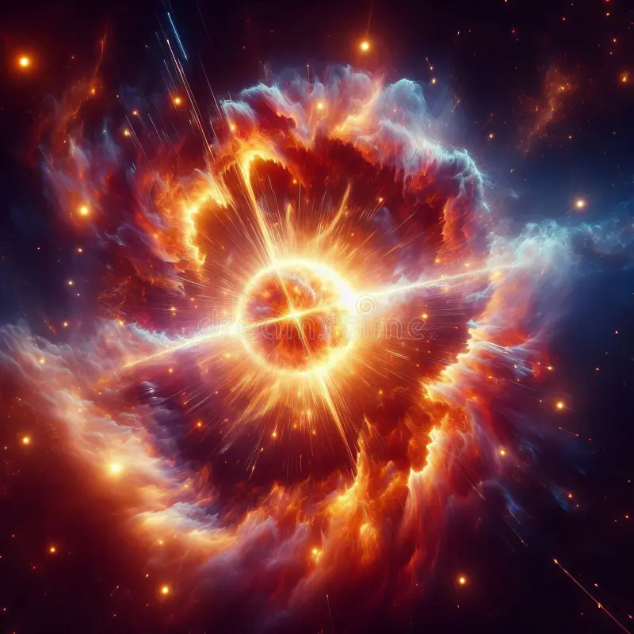
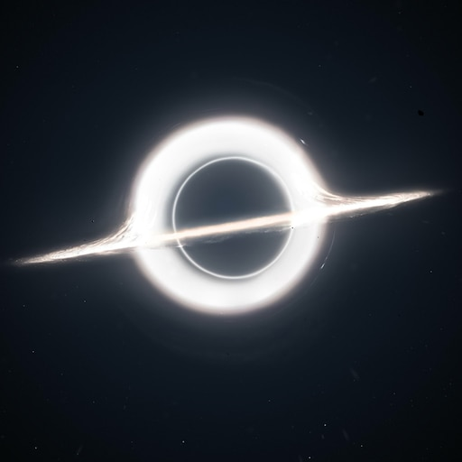
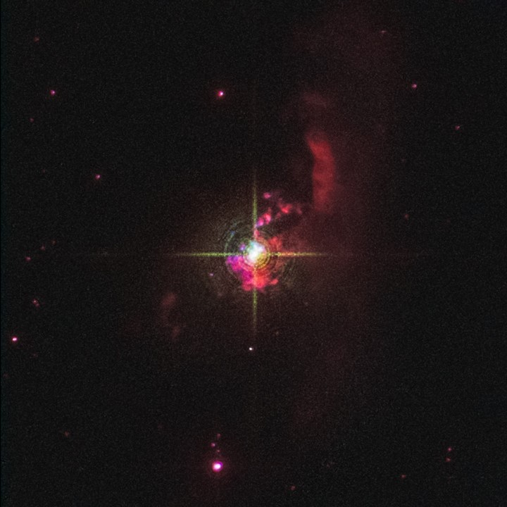

SpaceFrame is a captivating platform that frames the mysteries of the cosmos, offering insights into the universe's most profound phenomena, including dark matter, supernovas, and wormholes. Designed as a gateway to the celestial unknown, it combines scientific depth with an awe-inspiring visual journey through the cosmos.
Purpose
The goal of SpaceFrame is to educate and inspire curiosity about the cosmos. By blending sophisticated scientific insights with visually stunning representations of space, SpaceFrame aims to make complex topics comprehensible and captivating for everyone.
What Will You Explore?
Dark Matter & Energy: The universe's hidden forces.

Supernovas & Gamma Rays: Explosive ends of stars.

Wormholes: Pathways through spacetime.

Stars & Their Anomalies: Cosmic wonders and oddities.
Who Produces and Supports SpaceFrame?
SpaceFrame is produced by the students of Rochester Institute of Technology in Dubai, and is provided free of charge through support and subject matter expertise from the NASA’s Universe of Learning project, NASA’s Earth Observing System Project Science Office, NASA’s Hubble Space Telescope Project, and NASA’s James Webb Space Telescope Project.
Syed Ali Mustafa Wasti
Passionate about computers, space, and physics, I am an enthusiastic individual with a deep curiosity for the wonders of the universe. With a solid background in Physics, Mathematics and Computer Science and a keen interest in exploring the realms of space and physics, I am eager to contribute my skills and knowledge to a dynamic team where innovation and exploration are valued.
Hasan Alam
2nd year Computing and Information technology student at Rochester Institute of Technology. As a dedicated and detail-oriented beginner in computing, I am building a strong foundation in programming languages, web development, algorithms, data structures, and object-oriented programming. I have a growing passion for problem-solving and enjoy collaborating with others to tackle challenges and manage tasks efficiently.
Yousef Al-Salman
A computer science bachelor student with a profound interest in the dynamic field of computer programming and development. Eager to create, improve and innovate, I am now seeking an opportunity to contribute my technical expertise and passion for programming to a forward-thinking team. Described by my colleagues as energetic, reliable, and a quick learner.